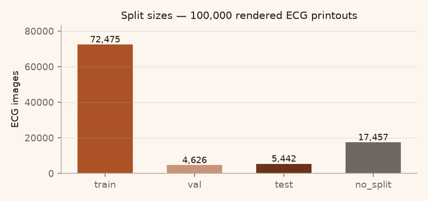
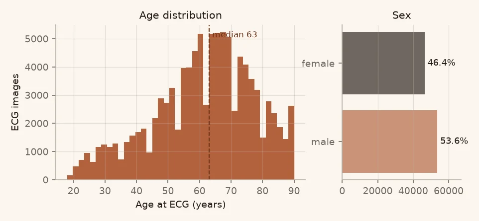
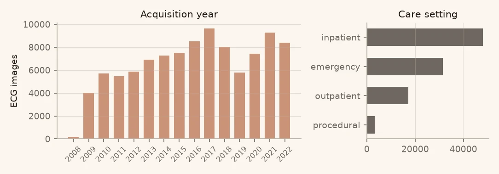
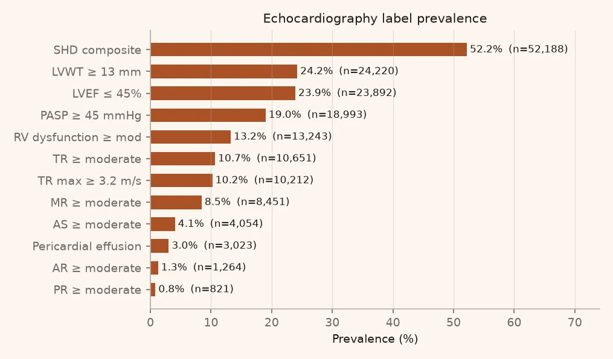
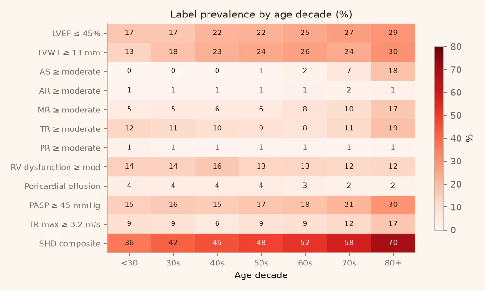
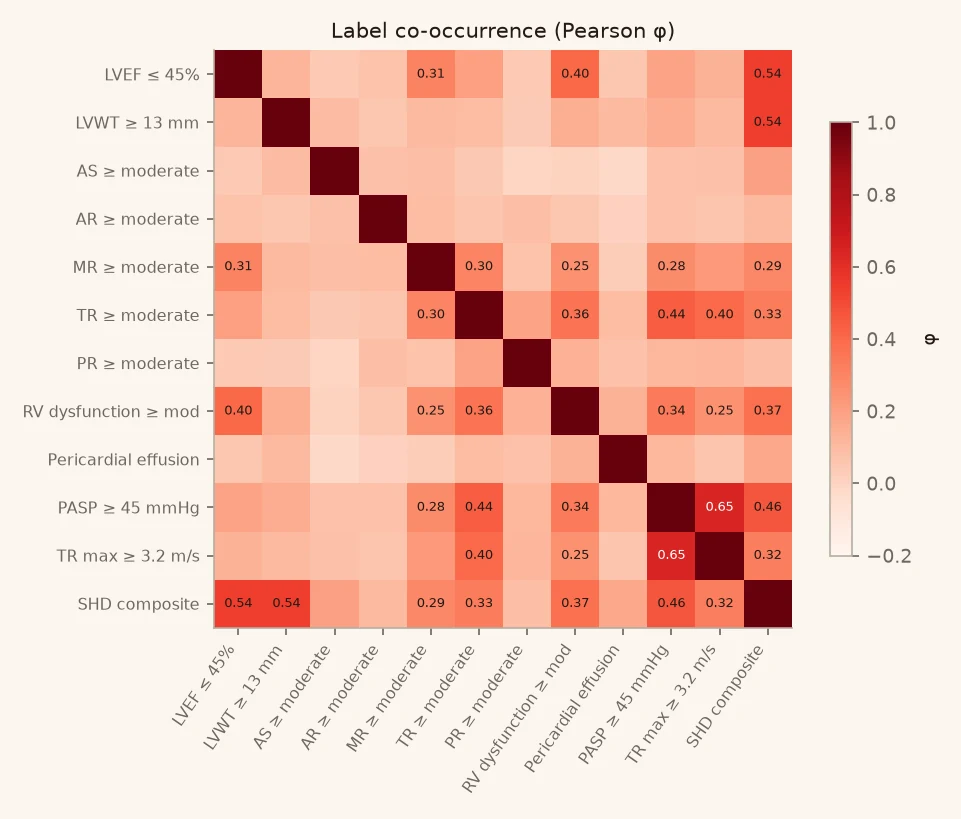
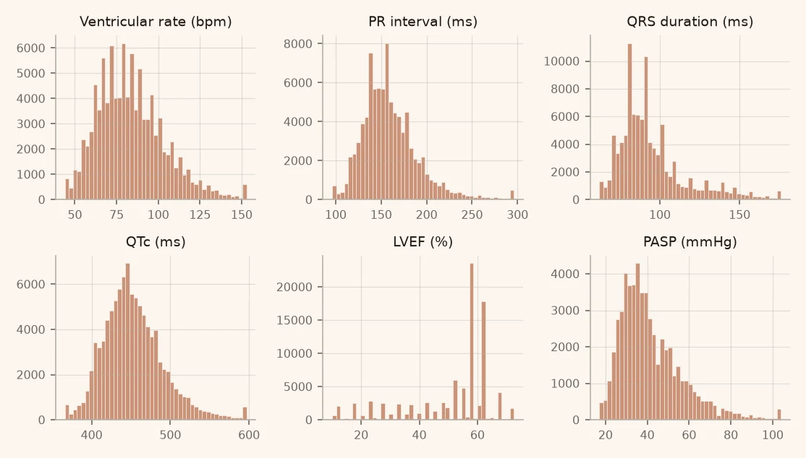
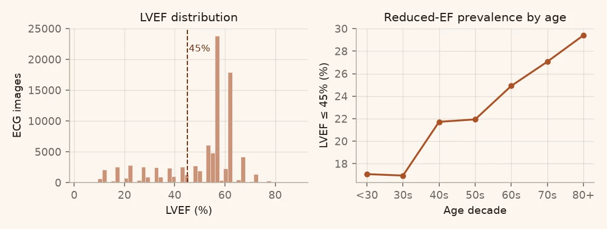
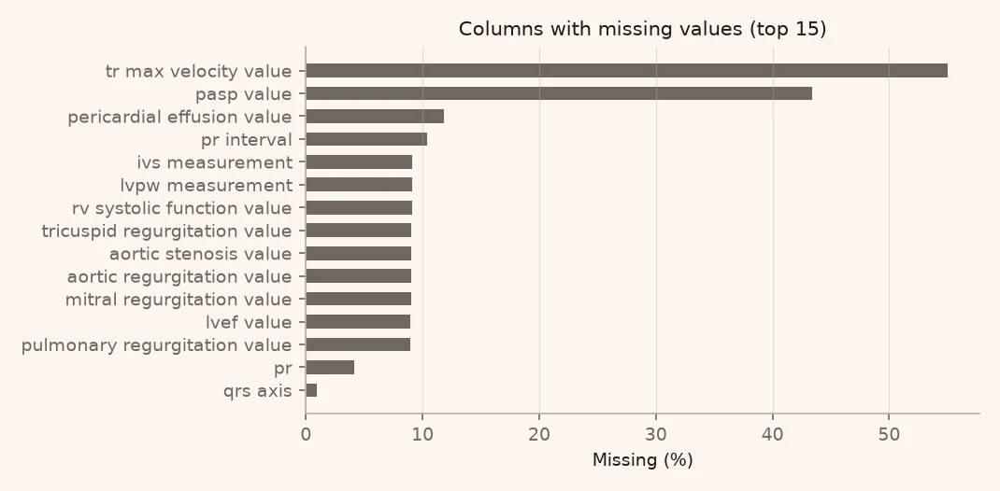
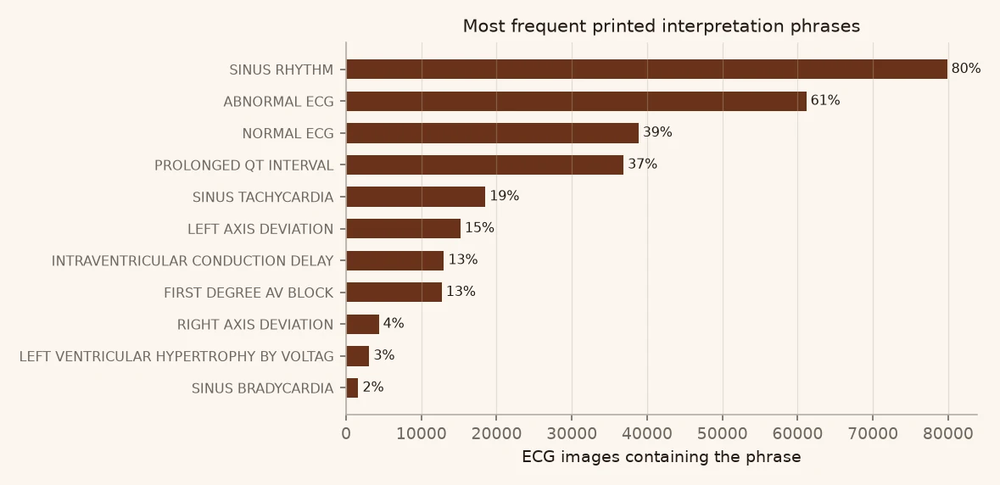

Tab 1 · Metadata EDA · generated 2026-11-11
렌더된 10만 장은 어떤 데이터인가
모든 수치는 tools/make_eda.py 가 metadata.csv 를 직접 집계한 결과입니다.
손으로 옮겨 적은 값은 없습니다.
1. 구조와 무결성
01 / 08| split | 이미지 | 비중 |
|---|---|---|
| train | 72,475 | 72.5% |
| val | 4,626 | 4.6% |
| test | 5,442 | 5.4% |
| no_split | 17,457 | 17.5% |
이미지 경로 중복 0건, 경로의 split 접두사와 split 컬럼 불일치 0건,
전 파일 PNG. 렌더 산출물이 metadata 와 1:1 로 맞습니다.

2. 표본 특성
02 / 08나이 중앙값 63세 (IQR 51–73), 50세 미만 22.3%. 성별은 남 53,581 · 여 46,419.
환자당 ECG 중앙값 1건, 평균 2.76건, 최대 195건. 전체 환자의 45.9% 가 2건 이상의 ECG 를 가집니다 — 이 사실이 split 설계에서 문제가 됩니다(6절).


3. 라벨
03 / 08
| 라벨 | n | % | |
|---|---|---|---|
| LVEF ≤ 45% | 23,892 | 23.89% | |
| LVWT ≥ 13 mm | 24,220 | 24.22% | |
| AS ≥ moderate | 4,054 | 4.05% | |
| AR ≥ moderate | 1,264 | 1.26% | |
| MR ≥ moderate | 8,451 | 8.45% | |
| TR ≥ moderate | 10,651 | 10.65% | |
| PR ≥ moderate | 821 | 0.82% | |
| RV dysfunction ≥ mod | 13,243 | 13.24% | |
| Pericardial effusion | 3,023 | 3.02% | |
| PASP ≥ 45 mmHg | 18,993 | 18.99% | |
| TR max ≥ 3.2 m/s | 10,212 | 10.21% | |
| SHD composite | 52,188 | 52.19% |

4. 라벨 동시발생
04 / 08
| A | B | φ |
|---|---|---|
| PASP ≥ 45 mmHg | TR max ≥ 3.2 m/s | 0.65 |
| LVWT ≥ 13 mm | SHD composite | 0.54 |
| LVEF ≤ 45% | SHD composite | 0.54 |
| PASP ≥ 45 mmHg | SHD composite | 0.46 |
| TR ≥ moderate | PASP ≥ 45 mmHg | 0.44 |
PASP ≥ 45 와 TR max ≥ 3.2 (φ 0.65) 는 같은 측정에서 계산되는 값이라 사실상 한 라벨입니다. 다중 라벨을 독립으로 다루면 이 구조가 손실로 이어지므로, 공동 학습 또는 라벨 간 의존을 반영하는 head 가 필요합니다.
5. 수치형 변수
05 / 08
| 변수 | 중앙값 | IQR | 결측 |
|---|---|---|---|
| Ventricular rate | 81 bpm | 69–95 | 0.0% |
| PR interval | 154 ms | 138–174 | 10.4% |
| QRS duration | 90 ms | 80–102 | 0.0% |
| QTc | 449 ms | 427–474 | 0.0% |
| LVEF | 57.5 % | 45–62.5 | 8.9% |
| PASP | 38 mmHg | 31–49 | 43.4% |
| TR max velocity | 2.7 m/s | 2.3–3.1 | 55.0% |
| IVSd | 1.1 cm | 1–1.2 | 9.1% |
| LVPWd | 1 cm | 0.9–1.2 | 9.1% |

6. 결측
06 / 08| 컬럼 | 결측률 |
|---|---|
| tr_max_velocity_value | 55.0% |
| pasp_value | 43.4% |
| pericardial_effusion_value | 11.8% |
| pr_interval | 10.4% |
| ivs_measurement | 9.1% |
| lvpw_measurement | 9.1% |
| rv_systolic_function_value | 9.1% |
| tricuspid_regurgitation_value | 9.0% |
| aortic_stenosis_value | 9.0% |
| aortic_regurgitation_value | 9.0% |
| mitral_regurgitation_value | 9.0% |
| lvef_value | 8.9% |
| pulmonary_regurgitation_value | 8.9% |
| pr | 4.2% |
| qrs_axis | 1.0% |
PASP(43%)·TR max(55%) 는 삼첨판 역류 신호가 잡힌 검사에서만 측정됩니다. 이 값들을 입력 feature 로 쓰면 측정 자체가 된 환자라는 선택편향이 들어갑니다 — 이미지 모델의 정답으로만 쓰고 입력에는 쓰지 않습니다.

7. 판독문 텍스트 = 누수 표면
07 / 08결과지에 인쇄된 판독문이 라벨과 직접 상관합니다
렌더된 결과지에는 실제 판독문 106종이 그대로 인쇄됩니다
(“ABNORMAL ECG” 61%, “LEFT AXIS DEVIATION” 등).
모델이 파형 대신 글자를 읽으면 성능이 부풀려지고, 실제 사진에서는 무너집니다.
그래서 헤더·판독문을 끈 --no-header --no-interpretation 변형을 별도로 렌더해
ablation 기준선으로 씁니다.
| 문구 | n | % |
|---|---|---|
| SINUS RHYTHM | 79,861 | 79.9% |
| ABNORMAL ECG | 61,152 | 61.2% |
| NORMAL ECG | 38,848 | 38.8% |
| PROLONGED QT INTERVAL | 36,861 | 36.9% |
| SINUS TACHYCARDIA | 18,509 | 18.5% |
| LEFT AXIS DEVIATION | 15,202 | 15.2% |
| INTRAVENTRICULAR CONDUCTION DELAY | 13,005 | 13.0% |
| FIRST DEGREE AV BLOCK | 12,713 | 12.7% |
| RIGHT AXIS DEVIATION | 4,344 | 4.3% |
| LEFT VENTRICULAR HYPERTROPHY BY VOLTAGE CRITERIA | 3,080 | 3.1% |
| SINUS BRADYCARDIA | 1,630 | 1.6% |

8. 학습 설계에 직결되는 발견
08 / 08환자 단위 split 이 깨져 있습니다
36,286명 중 4,618명(12.73%)이 두 개 이상의 split 에 등장합니다. 같은 환자의 ECG 가 train 과 val/test 에 동시에 들어 있다는 뜻이고, 이미지 모델은 환자 고유의 파형 형태를 외워 성능을 부풀릴 수 있습니다.
대응: ① 학습 전에 patient_key 기준으로 split 을 다시 만들고(그룹 split),
② 보고 수치는 환자 단위 group split 결과로만 제시, ③ 기존 split 결과는 “참고”로만 남깁니다.
그 외
- 라벨 불균형 — PR ≥ moderate 0.8% vs SHD 52.2%. PR/AR/effusion 은 양성 수가 1,000건 안팎이라 단순 BCE 로는 학습이 어긋납니다(가중·focal·threshold 조정).
- 나이 단축 — 나이만으로도 유병률이 단조 증가합니다. 나이를 이미지에서 읽게 두면 “나이 맞히기”로 성능이 새므로, 나이를 명시적 보조 입력으로 주고 이미지 기여도를 따로 재야 합니다.
- 측정값 결측의 선택편향 — PASP·TR max 는 검사 시행 여부와 상관. 입력 feature 로 금지.
- 중증도 표본 — 응급 31,453 · 입원 48,162 로 중증 편향이 있습니다. 일반 외래로 일반화하려면 별도 검증이 필요합니다.
재현
이 리포트는 저장소의 스크립트로 다시 만들 수 있습니다.
python3 tools/make_eda.py \ --meta metadata.csv \ --out assets/figures \ --summary data/summary.json python3 tools/build_site.py
원본 metadata.csv(환자 식별자 포함)는 저장소에 올리지 않습니다.
집계 결과인 data/summary.json 만 공개합니다.